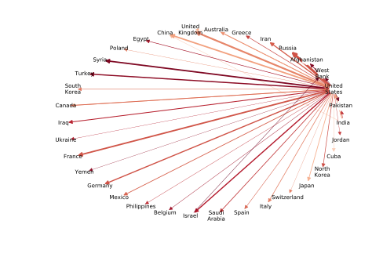
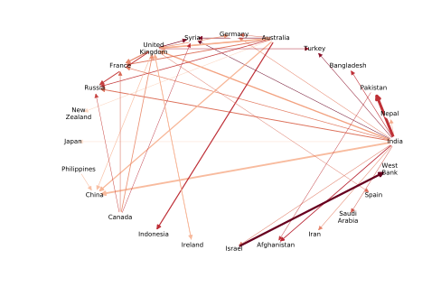

Dec. 16, 2018

What’s the best thing about Switzerland? -- I don't know, but the flag is a big plus! Jokes about other countries are always fun. But they ask an underlying questions to which they do not answer. How is one country perceived by others? In a positive way? Negative? Is it even known in other countries? If jokes cannot answer it in a satisfactory way, a good analysis of the media publications may enlighten. The aim of this project is to use the GDELT dataset to vizualize the feeling of countries towards each other.
The GDELT Project provides a (very big) list of events, each event being mentionned in different articles from different media from different countries. Among other things, it makes available for each article the name of the country that caused the event, the url of the media which reported it, and the tone of the article. We exploit all this information to build answers to our questions.
Going throught this article, we will first dive into the data to highlight the part we are intresting in. Secondly, we will explore it throught a few graphics and analysis. Finally, we will conclude this datastory with a few words. The code used to construct all these parts can be found in the notebook.
Regarding the data, the main information we used is the tone of the article. It consists of an already computed number quantifying the tone employed by the author to tell about the targeted country, from the most positive (100) to the most negative (-100) tone. The GDELT database also provides the country that caused the event and the url of the source, from which we can obtain the name of the country. The type of the actor (ex: Government, Military, Police) is also but not always available to refine our analysis. The data we used range from mid-february 2015 to end-november 2017.
These informations are then aggregated into several tables: the way a country sees itsef as a whole or by actor type, the way the rest of the worlds sees a specific country as a whole or by actor type, the way a country sees another country as a whole or by actor type and the way a country is seen by medias of different size, according to the number of mentions parsed by GDLET. Our main metric is the average tone of all the articles in each category.
Another important point to stress out is that the GDELT database is itself biased in the news it contains. Taking the example of Belgium:
We can see that the biggest websites in belgium are mostly european news, this is not that surprising in itself that Belgium got attributed the european websites and that these are more important than belgian news (altough 9000 mentions is quite small, swissinfo.ch got 330,000 for example). The concern here is that, at the exception of deredactie.be, belgian mainstream news websites (demorgen.be, rtbf.be and lalibre.be) have very few number of mentions.
The same pattern can be observed in France with france24.com having 340,000 mentions and lemonde.fr only having 182 or in Germany with thelocal.de having 37,000 and spiegel.de having 8000.
What we can observe here, is that websites that are available in english (all of the medias mentionned here with more than 1000 references except for spiegel.de) have much much more mentions that websites in other (widly spread) languages. This introduces a huge bias towards internationnal websites and is quite unfortunate. It also explains why there are so much mentions of the United States and allows for another interpretation of the small versus big media analysis, the interpretation of native versus english speaker websites.
| # | Source Name | number of mentions |
|---|---|---|
| 1 | paneuropeannetworks.com | 9368 |
| 2 | brusselstimes.com | 6328 |
| 3 | deredactie.be | 5480 |
| 4 | ec.europa.eu | 4695 |
| 5 | investineu.com | 3164 |
| ... | ... | ... |
| 19 | demorgen.be | 65 |
| 28 | rtbf.be | 19 |
| 31 | lalibre.be | 16 |
To assess the statistical reliability of these informations, confidence intervals were computed. However, the approximation we used (see the notebook for more details) is not valid for a small number of mentions. Thus, we chose not to show confidence intervals when the number of mentions is below 10000 in the following plots, but these are otherwise displayed by hovering over a country. In the same vein, we do not show metrics when the number of mentions is below 2000 which results in white areas on the maps. This is rather conservative but missing information was preferred over displaying misleading data.
In the graph, we can see that most of the countries have more than a hundred thousand mentions and only a part of 6% have less than ten thousand mentions. The number of countries with less than 10,000 mentions is quite small, however, that proportion rapidly grows when we refine our analysis (only taking national news into account, refining on type, media size).
Now that we have identified the strengths and limits of our dataset, we can start extracting the information. Our leading question is: what does the world think of us ? The first subquestion we can ask is: does the world even think of us ?
The following choropleth map allow us to see firtsly the number of articles mentionning a country ("about"), and secondly the number of articles written in a country ("from"). On the first hand, it shows us that countries from the African continent and South America tend to write less articles than other countries. In contrast, the United States is the country in which are written the most articles by a large margin. On the other hand, selecting the other view shows us that all countries are covered by the articles written. By deduction, we can say that events that happen in African and South American countries are much more covered by other countries than by themselves.
This map gives a good idea about the importance of a country but we cannot use it to asses how much a country A mentions a country B. The whole country to country network is way too big to be represented (tens of thousands of edges), however, we can represent the biggest edges, this is done in the following. These two graphs show the 40 biggest (in terms of number of mentions) articles by medias from country A about events provoked by country B. The color represents the average opinion (red means dissaproval and blue approbation, altough there is no blue here). The size of the edge is an indication of the number of mentions.
For the first graph, we can see that the United States are a very important news producer for the GDLET dataset. There are only a few links in the 40 most important edges that do not come from the US. We can also see that the most important link is headed towards Russia. We can also see that these links come from countries in conflict to eachother. For example: Israel to the West Bank (aka Palestine) and India to Pakistan. We can also see that all of the mentions are negative.
Once we removed all mentions about/coming from the US, we can see a much more diverse graph. We can still see the links that were on the previous network between Isreal and the West Bank and India and Pakistan except that they are now much more visible. We can also see that countries like Syria, Afganhistan, Turkey and at smaller scale Russia are subject to a lot of criticism which correlates with our experience as news consumers.
We can now get to the heart of the matter, and use the average tone of the articles. The obvious way to assess how good a country is perceived by others is to compute the mean opinion on the rest of the world over that country. This is what the following map shows. We can see that Canada, Sweden and the Baltic countries are doing quite well but that is also the case for the US, China and most southern african countries. On the other hand, Europe is not that well seen and central Africa is very often critizised.
An improvement over this criterion would be to weigh less countries with bad reputation (e.g. we should not consider that Somalia dislikes Canada to assess the popularity of Canada) but this nearly doesn't change the scores, so we can conclude that the previous mentionned example doesn't occur often.
We can conclude from the previous that it is still possible to been seen in a god way abroad even for poor countries (Namibia, Botsanawa, Ghana) and that Asian Countries are doing quite well.
Another interesting indicator to look at is difference between how a country percieves itself and what the rest of the world thinks. We can see that, withtout surprise, the huge majority of countries have a positively biased opinion of themselves. That bias is most important in Asia, Africa, South America and Eastern Europe than in Western Europe and North America.
This might be correlated with freedom of press, to check that hypothesys, we computed the correlation (as well as visualizing the relation) between the difference in opinions and the Reporters without borders 2016 World Press Freedom Index. Unfortunately, the experiment showed inconclusive which makes sense due to the complexity of evaluation of RWB Index.
An interesting data that GDELT gives us about the actor of an event is its type, a lot of different types are used but the most common are: Government, Media, Police, Big Corporations, Judiciary, Military, Education and Celebrities.
We can refine our analysis based on these types and we get the following map for the opinion of the rest of the world on a given country. An important remark is that GDELT doesn't always (80% of the time) specifies the type of the actor so using this field reduces the number of available data (thus the increased number of white countries).
First of all, analysing the global trends shows us that Big Corporations and Education are quite popular wheras Media, Military, Judiciary and Police are not at all. We can see that government popularity as well as media and Celebrities follows the same trend as the global popularity. Military are also especially inpopular in Central Africa, the Middle East, Ukraine and Venezuela which makes sense due to the rebellions and military conflicts in these zones.
Another interesting idea is to try to compute clusters. To compute these, we only used the 40 biggest countries. We can regroup countries in two ways, either by the way they are perceived by the outer world (clustering by popularity) or by the way they perceive the rest of the world (clustering by opinion). We computed both in the following, we also computed the clusters for each actor types. However, the obtained dendrograms do not show any particularly interesting information. They are thus grouped in the following slidershow. As explained, Each category in "All Actors", "Government", "Media", "Police", "Big Corporations", "Judiciary", "Military", "Education", "Celebrities" is covered by two dendrograms, the first by opinion and the second by popularity.


For the following analysis, medias were separated into 3 different size groups (other numbers were tested as well but 3 shows the more insight). These groups were computed by ordering the media by importance and grouping them so as to have groups with roughly the same number of mentions. The importance is mesured by counting the number of articles published by a media. This was done separately for each country, so that each country has medias in all of the categories.
In case one of the groups was below the treshold to show him on the map, we hid the other groups of the same country as well for coherence.
The previous map shows the opinion of the media of a country about itself for different sizes of medias. As explained before, smaller should also be interpreted as non-english speaking media here. We can see that depending on the country, the size of the media has a more or less important influence on the average opinion. We can nevertheless note that the variation is usually quite important. For most countries, small medias have a better national opinion whereas big and medium countries have a worse opinion.
Here, we can see the opinion on a country of small/medium/big medias of the other countries. There is not much difference between medium and big medias, however, small medias have a much better opinion of the outer world than medium or big ones. An explanation for that phenomenon would be that small media report more news about popular types of actors (multinationals, education) and less about unpopular types of actor (military, police).
By analysing the types individually, we can see that the trend applies for all of them. Additionnally, the proportion of mentions for each actor type nearly doesn't change.
Another confusion factor could be that small news are more likely to talk about friendly countries than big news, again, this was explored and we also concluded that this doesn't change the results. We can thus say that small media really have a better opinion of the outer world.
So we now have some elements to answer our big question: what does the world think of us? First of all, wherever we come from, the world is talking about us. And sometimes even more than ourselves, coming from countries of Africa or South America! On the other hand, it is not that everyone is talking about everybody but much more USA talking about everyone. Without counting the USA, it is intresting to notice that the countries mostly talk about both thier neighboor or about the countries with witch they have historical relations (colonies, wars...).
Globally, the tone employed is negative but it stays close to neutral (remember that the scale goes from -100 to 100), same goes when it is positive. Each country sees itself in an average tone between -4 and 4, and the majority is above the neutral tone. The bad news is, except for a few rare cases, the opinion of external countries is generally negative, and much more negative than how the country sees itself which is sad.
To balance that finding, the analysis of the subject's type, althought it is partial due to lack of data, shows that it has a big correlation with the tone of the article. To take the two extremes, we can see that articles which reports news about police are written with a very bad tone, close to -7 for everyone. On the other hand, articles about big corporations are written with a (relatively) good tone between -1 and 1. If you want to improve the average tone of the articles written about your country, remember to promote the well-being of such corporations (joke). For other subjects, like government, military and celebrities the panorama is much more contrasted, due to geopolitics.
Now, let's remind who wrote the articles! We saw in the data part that the most important media for each country are not always well represented in the dataset, due to language issues for example. That might be a good explanation why there are few articles from central african countries. But for those who are present in the dataset, our analysis shows that the less there are articles referenced from a media, the better is the tone employed to discribe events abroad. The national situation depends a lot of the country, and seems to be correlated to the geopolitics.
To conclude, the (english langage) world view of us is a neutral-bad tone, a bit below what we say of ourselves. But wherever you come from, know that media reports events about your country. Your country is known!
Sources:
The GDELT project https://www.gdeltproject.org/
Source code https://github.com/NatGr/projectAdA